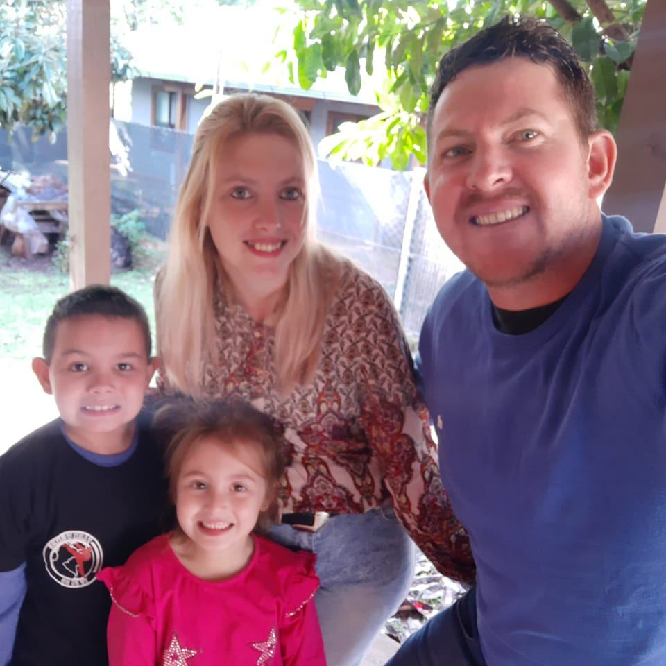

Descubre la tradición en cada sorbo.
🧉 Honramos la tradición del mate como símbolo de amistad, encuentro y cultura criolla, ofreciendo piezas hechas a mano con cuero, nobleza y raíces.
Mates.
Mate de cuero negro
10/10

Creador
Antonio Leichtveist
Value
$10.000